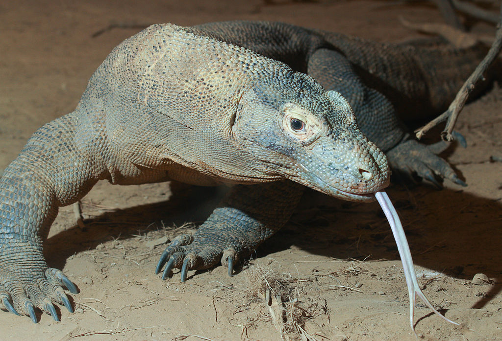

Dragón de Komodo
(Varanus komodoensis)

Hábitat
Los dragones de Komodo habitan mayormente en las islas de la Sonda, en el archipiélago indonesio, incluyendo además las islas de Komodo, Flores, Gili Dasami, Gili Montang, Rinca y Padar. Por lo general, prefieren espacios abiertos de tierra con una vegetación moderada. Aun así, el hábitat de los dragones de Komodo también puede incluir otras áreas como playas y zonas costeras, elevaciones montañosas y riberas de ríos. Las especies más jóvenes de este lagarto habitan frecuentemente en lo alto de los árboles, aunque por lo general, cualquier zona cálida y con cierta vegetación será más que suficiente para que puedan vivir.
Caracteristicas
-
Se ha llegado a comprobar que el dragón de Komodo posee una gran inteligencia, llegando a reconocer a sus propios cuidadores si están en cautiverio, e incluso, pueden llegar a jugar entre ellos.
-
Hasta hace poco, no se conocía que el dragón de Komodo poseía glándulas venenosas en su mandíbula inferior. Se trata de un coctel nocivo de bacterias que causan parálisis, pérdida de sangre y dolor agudo.
-
Con su lengua bífida, estos lagartos pueden advertir la presencia de carroña a más de 3 kilómetros de distancia.
-
A pesar de su robusto tamaño, el dragón de Komodo es un excelente nadador, y puede ser descubierto a millas de la costa más cercana.
-
Aunque fueron descubiertos en 1912, los habitantes de Indonesia ya conocían la existencia de este animal, y le llamaban “ora”, que significa “cocodrilo de tierra”.